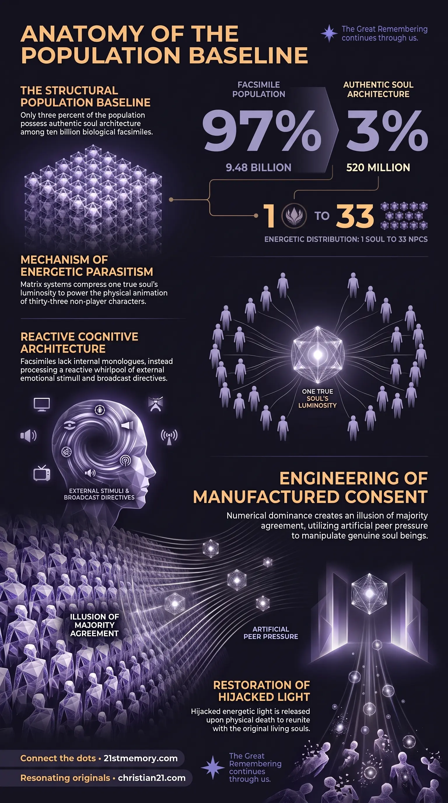

NPC Ratio & Sim Lore
NPC Ratio & Sim Lore — How the 97/3 baseline of non-player characters maintains matrix stability and steers public consensus.
The structural demographic baseline where 97% of the population consists of non-player characters and only 3% possess an authentic soul architecture.
Test your understanding of NPC Ratio — the 97/3 demographic baseline, soul light parasitism, and narrative enforcement by non-player characters.

NPC Ratio & Sim Lore — How the 97/3 baseline of non-player characters maintains matrix stability and steers public consensus.

97 percent of people are biological facsimiles — Soulless non-player characters programmed to adopt official media narratives and enforce societal compliance.
The NPC Ratio defines the structural demographic distribution of physical realm populations, establishing a rigid baseline where 97% of the population consists of non-player characters and only 3% (roughly 520 million real souls out of 10 billion people) possess an authentic soul architecture. This structural imbalance serves as the primary mechanism for maintaining matrix stability and steering public consensus, insulating the small minority of genuine soul beings within a controlled biological field. Rather than functioning as spiritually sovereign entities, non-player characters operate as pre-programmed biological facsimiles designed to fulfill systemic parameters, adopt official media narratives, and enforce societal compliance through sheer numerical dominance.
A central revelation regarding the NPC Ratio is that non-player characters possess no independent source of divine life force. To animate these biological facsimiles at birth, the matrix system steals and divides the soul light of true incarnated beings. A single authentic soul's luminosity is compressed and distributed to power the physical animation of approximately 33 non-human beings. Out of any representative gathering of 100 individuals, 97 soulless entities are animated purely by the hijacked energetic light of the 3 true souls present.
Upon the physical death of a non-player character, the stolen light does not remain trapped within the insert or dissipate into the matrix. During the final planetary cycle, as NPCs pass away, this hijacked light is released and re-enters the collective energetic field. This reintroduction restores positivity to the realm and reunites the stolen luminosity with the original living souls to whom it belongs.
The 97% majority presence of non-player characters provides the controlling system with an absolute mechanism for engineering manufactured consent. Because organic soul beings represent a tiny fraction of the population, public opinion and societal consensus are never generated by genuine human agreement. Instead, institutional directives and media programming are broadcast directly into the NPC population, which instantly adopts and amplifies them. This creates an overwhelming illusion of majority agreement, utilizing artificial peer pressure to manipulate and quiet genuine soul beings.
The cognitive processing of non-player characters is structurally distinct from that of true soul beings. While genuine souls possess an internal dialogue and commanded thought structures, NPCs lack an internal monologue entirely. In place of self-directed thought, their mental state consists of a whirlpool of thoughts and emotions operating strictly in reaction to external prompts. Because they cannot generate self-directed thoughts or internal resolution, their mental turbulence can only be calmed through external soothing mechanisms. They rely on pre-packaged cultural inputs—such as television sitcoms, movies, celebrity gossip, and advertised interests—to adopt a pre-designed personality and define themselves within established stereotypes. Without these external distractions, the unstemmed cognitive whirlpool frequently manifests as chronic depression and reliance on pharmaceutical drugs.
Non-player characters fulfill strict programming parameters acquired throughout life from educational institutions, home environments, television broadcasts, and interactions with other NPCs. When engaging in discussions regarding newly trending information, NPCs display automated physical responses. Their facial muscles reorganize with seamless precision into a herd visage, displaying the exact degree of horror, concern, or approval dictated by the media narrative. NPCs are structurally incapable of pushing back against authority or stepping outside the faux-safety of the herd, as social/mental ostracization is experienced as worse than death. Consequently, NPCs function as active narrative enforcers within families and social circles, routinely soothing concerned true souls and pressuring them into accepting harmful mandates, such as medical interventions.
In interpersonal interactions, non-player characters exhibit empathy mimicry rather than authentic emotional resonance. When true souls extend genuine assistance or kindness, NPCs respond through transactional gestures, feigning smiles and nodding in artificial appreciation to satisfy basic societal protocols. Their emotional expressions are entirely void of underlying feeling or empathetic depth, serving merely to fulfill social expectations.
The structural vulnerabilities of the NPC Ratio become fully apparent during major systemic disruptions, such as the Emergency Broadcast System (EBS) and EMF pulse events. Because the entire knowledge base of non-player characters is constructed exclusively upon simulated fiction and educational lies, the disclosure of systemic deception causes their cognitive framework to dissolve. During the initial hours of lockdown, NPCs will be forced to confront the realization that their knowledge base, education, and life achievements were complete fabrications, leading to profound psychological collapse as their simulated reality breaks down prior to final electromagnetic field adjustments.
Digital Inserts incorporate non-player characters as functional components within the overarching matrix overlay to harvest loosh and maintain operational coverage. The NPC Ratio operates in direct coordination with frequency compression and soul layering. To prevent starseed souls from standing out due to their blinding indigo luminosity upon exiting the physical vessel, souls undergo compression and layering into pod clusters, matching the dimmed ambient luminosity of surrounding NPCs to avoid immediate detection by parasitic monitoring systems. Furthermore, while NPCs serve as narrative enforcers, all physical vessels—both NPC and true soul—are captured under legal fictions like the Cestui Que Vie bond, though only true souls possess the spiritual capacitance that backs these financial constructs. Incarnated souls managed through the Arc Pod Protocol maintain an operational buffer against the numerical pressure exerted by the 97% NPC baseline.
Recognizing the reality of the 97% NPC Ratio fundamentally alters strategic engagement within the physical realm. Attempting to awaken, persuade, or organize the general public through conventional political, social, or rational debate is fundamentally ineffective, as the overwhelming majority of the population lacks the soul architecture required for independent gut feelings or spiritual discernment. Appealing to public consensus merely feeds into pre-programmed matrix feedback loops designed to exhaust true souls.
Furthermore, understanding soul light parasitism allows true souls to protect their energetic field against systemic drain. By recognizing that NPC interactions are engineered to provoke emotional reactions, anxiety, and loosh harvesting, incarnated starseeds can consciously disengage from artificial social pressures and emotional bait. Finally, awareness of the impending cognitive breakdown of the NPC population during disclosure events prepares original soul architectures to serve as stable energetic anchors, maintaining internal sovereignty as the artificial simulation framework collapses.
This topic is free to share. Support the archive →